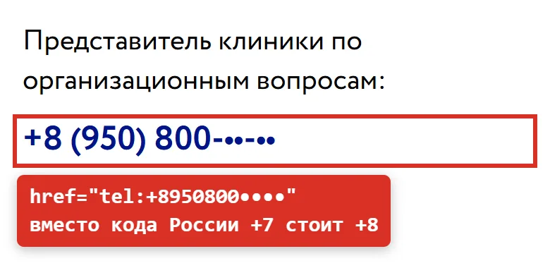
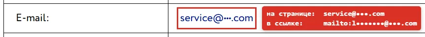
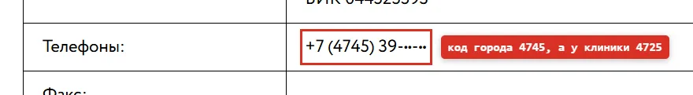
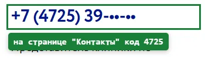
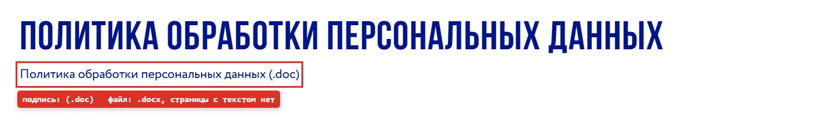
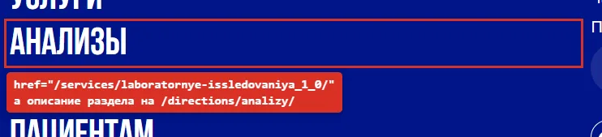
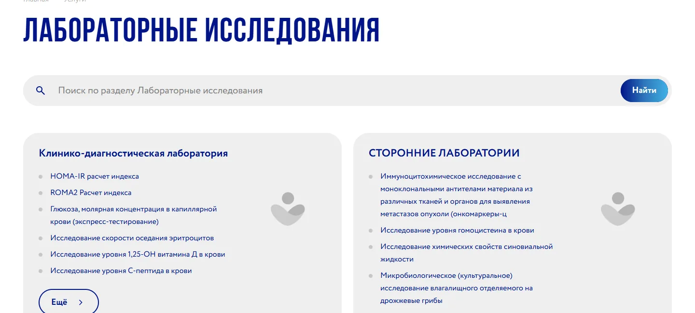
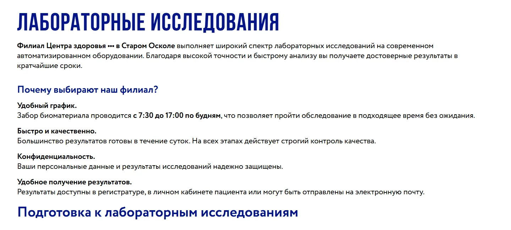

9 дефектов на сайте (медицинского центра)
Что проверяла: страницы контактов и реквизитов, меню, служебные файлы для поисковых роботов, пагинацию, обработку адресов с параметрами.
Как: вручную в браузере на компьютере и в режиме смартфона, ссылки tel: и mailto: в коде страниц, коды ответа сервера через curl.
Итог: 4 дефекта мешают пациенту связаться с клиникой или прочитать документы, 5 технических мешают поисковикам правильно индексировать сайт.
- Технический аудит
- Баг-репорты
- Severity и Priority
- Коды ответа сервера
- curl
- Мобильная версия
9
дефектов4
мешают пациенту5
технических для поисковиков4
серьёзности MajorСводка
| ID | Дефект | Серьёзность | Приоритет |
|---|---|---|---|
| BUG-01 | Телефон представителя клиники на странице "Контакты" набирается с кодом +8 вместо +7 | Major | Высокий |
| BUG-02 | На странице с реквизитами ссылка на e-mail открывает не тот адрес, который написан | Major | Высокий |
| BUG-03 | Опечатка в коде города на странице с реквизитами: 4745 вместо 4725 | Minor | Средний |
| BUG-04 | Политика обработки персональных данных доступна только файлом Word, подпись ссылки указывает другой формат | Minor | Средний |
| BUG-05 | Файла robots.txt нет: адрес /robots.txt отдаёт 404 | Major | Высокий |
| BUG-06 | Карты сайта нет: адрес /sitemap.xml отдаёт 404 | Major | Средний |
| BUG-07 | Несуществующие страницы пагинации открываются с кодом 200 и показывают первую страницу | Minor | Средний |
| BUG-08 | Главная страница открывается по /index.php и по любому адресу с параметрами, тега canonical нет | Minor | Низкий |
| BUG-09 | У раздела анализов две страницы с одинаковым заголовком, меню ведёт на ту, где нет описания раздела | Minor | Низкий |
Баг-репорты
BUG-01 Телефон представителя клиники на странице "Контакты" набирается с кодом +8 вместо +7
Шаги
- Открыть страницу /contacts/ на смартфоне.
- Найти блок "Представитель клиники по организационным вопросам".
- Нажать на номер телефона.
Фактический результат
Номер показан как +8 (950) 800-••-••, в ссылке записано tel:+8950800••••. Телефон предлагает набрать номер с кодом +8, то есть номер в неверном международном формате вместо российского +7.
Ожидаемый результат
Номер показан как +7 (950) 800-••-••, в ссылке tel:+7950800••••, звонок уходит представителю клиники.


BUG-02 На странице с реквизитами ссылка на e-mail открывает не тот адрес, который написан
Шаги
- Открыть страницу /about/1697/.
- В таблице реквизитов найти строку "E-mail".
- Нажать на адрес почты.
Фактический результат
На странице написан адрес service@•••.com, а почтовая программа открывает письмо на личный адрес сотрудника l•••••••@•••.com. На странице "Контакты" для обращений указан третий адрес: service@•••.ru. Письмо пациента уйдёт не туда, куда он рассчитывает.
Ожидаемый результат
Текст ссылки и адрес в mailto совпадают. На всех страницах сайта указан один и тот же адрес для обращений.


BUG-03 Опечатка в коде города на странице с реквизитами: 4745 вместо 4725
Шаги
- Открыть страницу /about/1697/ и найти строку "Телефоны".
- Открыть страницу /contacts/ и сравнить номер регистратуры.
Фактический результат
В реквизитах номер +7 (4745) 39-••-••. На странице "Контакты" тот же номер записан с кодом города 4725.
Ожидаемый результат
Номер +7 (4725) 39-••-••, одинаковый на всех страницах.




BUG-04 Политика обработки персональных данных доступна только файлом Word, подпись ссылки указывает другой формат
Шаги
- Открыть страницу /info/505/.
- Нажать на ссылку "Политика обработки персональных данных (.doc)".
Фактический результат
Текста политики на странице нет, по ссылке скачивается файл .docx. В подписи ссылки указан формат .doc. На телефоне файл скачивается, и для чтения нужно отдельное приложение.
Ожидаемый результат
Текст политики опубликован на странице /info/505/, файл можно оставить дополнительной ссылкой. Подпись ссылки совпадает с форматом файла.


BUG-05 Файла robots.txt нет: адрес /robots.txt отдаёт 404
Шаги
- Открыть адрес /robots.txt.
Фактический результат
Сервер отвечает 404. Поисковые роботы не получают правил обхода, в том числе не узнают, какие параметры в адресах можно не учитывать (см. BUG-07 и BUG-08).
Ожидаемый результат
Адрес отдаёт 200 и текстовый файл с правилами для роботов и ссылкой на карту сайта.
Лог проверки
код размер canonical адрес
404 146 байт canonical: 0 /robots.txtBUG-06 Карты сайта нет: адрес /sitemap.xml отдаёт 404
Шаги
- Открыть адрес /sitemap.xml.
Фактический результат
Сервер отвечает 404. На сайте больше 600 страниц, и поисковикам приходится находить их только по ссылкам.
Ожидаемый результат
Адрес отдаёт 200 и XML-файл со списком страниц, которые нужно индексировать.
Лог проверки
код размер canonical адрес
404 57003 байт canonical: 0 /sitemap.xmlBUG-07 Несуществующие страницы пагинации открываются с кодом 200 и показывают первую страницу
Шаги
- Открыть адрес /reviews/?PAGEN_2=500 (в разделе отзывов всего 2 страницы).
- Открыть адрес /reviews/?PAGEN_2=abc.
- Сравнить содержимое с первой страницей /reviews/.
Фактический результат
Оба адреса отдают 200, текст страниц полностью совпадает с первой страницей раздела. Любой номер создаёт ещё одну копию. При этом обычный несуществующий адрес отдаёт 404, то есть ошибка именно в обработке номера страницы.
Ожидаемый результат
Номера больше последней страницы, 0 и нечисловые значения отдают 404.
Лог проверки
код размер canonical адрес
404 57028 байт canonical: 0 /nesushchestvuyushchaya-stranica-123/
200 93961 байт canonical: 0 /reviews/
200 93765 байт canonical: 0 /reviews/?PAGEN_2=2
200 93961 байт canonical: 0 /reviews/?PAGEN_2=500
200 93961 байт canonical: 0 /reviews/?PAGEN_2=abc
200 77151 байт canonical: 0 /catalog/?PAGEN_3=3BUG-08 Главная страница открывается по /index.php и по любому адресу с параметрами, тега canonical нет
Шаги
- Открыть адреса /index.php, /?anything=123, /?utm_source=test.
- В коде страниц (Ctrl+U) поискать rel="canonical".
Фактический результат
Все адреса отдают 200 и одинаковый HTML размером 148 012 байт. Тега canonical нет ни на одном. Для поисковика каждый такой адрес становится отдельной копией главной, а рекламные метки создают их постоянно.
Ожидаемый результат
/index.php перенаправляет с кодом 301 на главную. На всех страницах есть тег canonical с адресом без параметров.
Лог проверки
код размер canonical адрес
200 148012 байт canonical: 0 /
200 148012 байт canonical: 0 /index.php
200 148012 байт canonical: 0 /?anything=123
200 148012 байт canonical: 0 /?utm_source=testBUG-09 У раздела анализов две страницы с одинаковым заголовком, меню ведёт на ту, где нет описания раздела
Шаги
- На главной нажать "Меню" и выбрать пункт "Анализы".
- Открыть страницу /directions/analizy/ и сравнить с предыдущей.
Фактический результат
Пункт меню (и такая же ссылка в подвале) ведёт на /services/laboratornye-issledovaniya_1_0/: там список анализов без описания раздела. Описание раздела, преимущества и подготовка к анализам находятся на /directions/analizy/. У обеих страниц заголовок H1 "Лабораторные исследования", поисковик видит две страницы на одну тему. Такие же пары страниц есть ещё у 11 направлений.
Ожидаемый результат
У раздела одна основная страница, меню и подвал ведут на неё, список анализов доступен с неё. Вторая страница закрыта от индексации или объединена с основной.





